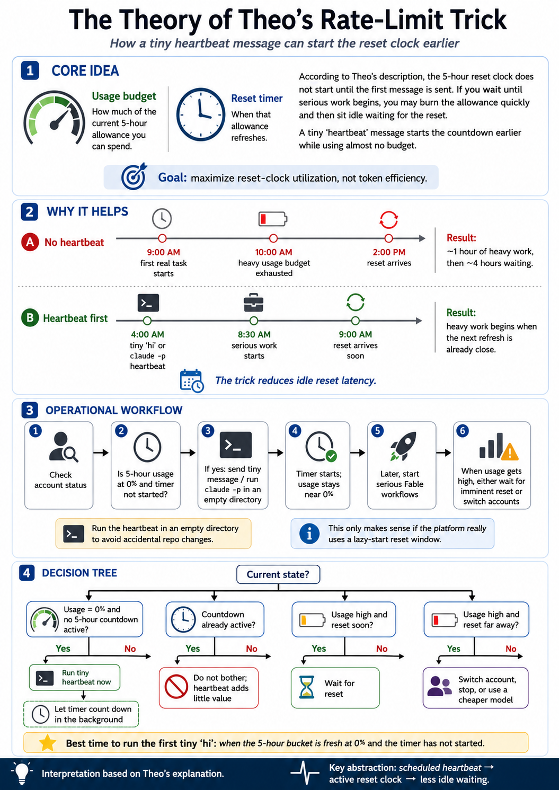

The Theory of the Host’s Rate-Limit Trick
How a tiny heartbeat message can start the reset clock earlier.
1. Core theory
The trick separates two concepts that users often conflate:
| Concept | Meaning | Why it matters |
|---|---|---|
| Usage budget | The amount of model usage available inside the current 5-hour window. | This is the thing you spend when you run real agent work. |
| Reset timer | The countdown until that allowance refreshes. | If the timer is not running, you are wasting potential reset time. |
claude -p heartbeat spends almost no budget but starts the countdown earlier.
If the reset clock starts only after the first message, then an unused account can sit at 0% usage while the reset clock is also dormant. That is bad if you later begin heavy Fable work and exhaust the window quickly.
The heartbeat reduces that latency by forcing the countdown to begin before serious work begins.
2. Why the trick helps
claude -p heartbeat3. Workflow
The workflow is a scheduled “heartbeat” for the account.
Look at current 5-hour usage and whether a countdown is active.
Best case: usage is 0% and no 5-hour timer is running.
Send a trivial message or run claude -p in an empty directory.
Usage remains near 0%, but the reset clock begins counting down.
Run heavy Fable workflows closer to the next reset.
If usage gets high, wait for imminent reset, switch account, or use cheaper models.
Hermes / cron form
The Host’s Hermes-agent version asks an always-on agent to install a cron job. The important constraints are: run on an always-on machine, run in an empty directory, and trigger every 5 hours.
I want to make sure my Claude Code account has a recent message at all times.
Set up a cron that triggers every 5 hours.
It should run in an empty directory.
The command should be claude-p.Safer shell version
mkdir -p ~/agent-heartbeats/claude-empty
mkdir -p ~/agent-heartbeats/logs
cat > ~/agent-heartbeats/run-claude-p-heartbeat.sh <<'EOF'
#!/usr/bin/env bash
set -euo pipefail
WORKDIR="$HOME/agent-heartbeats/claude-empty"
LOGFILE="$HOME/agent-heartbeats/logs/claude-p-heartbeat.log"
mkdir -p "$WORKDIR" "$(dirname "$LOGFILE")"
cd "$WORKDIR"
echo "[$(date -Is)] starting claude-p heartbeat" >> "$LOGFILE"
timeout 60s claude-p >> "$LOGFILE" 2>&1 || true
echo "[$(date -Is)] finished claude-p heartbeat" >> "$LOGFILE"
EOF
chmod +x ~/agent-heartbeats/run-claude-p-heartbeat.sh
# Add this to crontab:
# 0 */5 * * * /bin/bash ~/agent-heartbeats/run-claude-p-heartbeat.sh4. Decision tree
Yes → run the tiny heartbeat now. Then let the timer count down in the background.
No → check the next state.
Yes → do not bother. Another heartbeat adds little value.
No → only run heartbeat if usage is fresh or near-fresh.
Yes → wait for reset. Do not start a large workflow right before exhaustion unless the reset is imminent.
No → consider switching account or using a cheaper model.
Yes → stop, switch account, route subagents to cheaper models, or defer heavy workflows.
No → proceed normally.
5. The deeper abstraction
The narrow trick is about Claude Code / Fable rate-limit windows. The broader agent-systems abstraction is more useful:
Generalized beyond this specific rate-limit issue, a heartbeat can also be used to keep an agent system operational:
- check whether agent credentials still work,
- verify that the CLI still launches,
- emit logs for observability,
- keep queues moving,
- run daily PR triage,
- inspect failing CI,
- summarize what needs human attention.
In production terms, this is a minimal agent daemon pattern:
cron / scheduler
↓
safe empty workspace
↓
agent CLI heartbeat
↓
logs
↓
human-visible operational state6. Visualization
The infographic below summarizes the theory, workflow, and decision tree.
